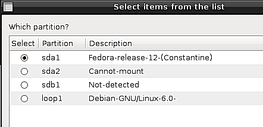

Restaurar el codigo MBR generico para que Windows arranque otra vez - Rescapp - Documentation
-
Paso 1Rescapp busca particiones primarias en vuestro disco.
-
Paso 2Si estas particiones se han encontrado Rescapp le presenta las particiones. Al mismo tiempo es preguntado:
Which partition?
Es decir, qué partición contiene vuestro Windows. Se supone que ha de elegir su Windows (probablemente sólo verá una) y pulsar el botón OK. Si tiene varios Windows lo mejor es elegir el primero que instaló en su ordenador.

-
Paso 3Rescapp busca los discos duros presentes en su sistema basandose en la información encontrada en el archivo: /proc/partitions.
-
Paso 4Se le pregunta:Which hard disk to install Windows mbr on?
Es decir, en qué disco duro instalar Windows en. Se supone que ha de mirar los tamaños de los discos (para identificar sus discos duros) y elegir (normalmente) aquel que está definido para arrancarse el primero en su configuración de la BIOS.

-
Paso 5Se le pregunta:Which is the right position for this hard disk?Seleccione la posición en el orden de arranque de acuerdo con la configuración de la BIOS del disco duro mostrado.

-
Paso 6Rescapp con toda la información obtenida va a configurar un mbr de Windows en su disco duro elegido para que la partición elegida sea arrancada al arrancar su máquina.
Por favor espere.. Actualmente (Rescatux 0.23) este paso cuesta un poco pero el mensaje Por favor espera no ha sido implementado.
-
Paso 7Se le informa del proceso de instalación del mbr.El mensaje se explica a sí mismo. O bien obtiene:Success! Windows mbr was installed OK! :) (Ha ido bien.)oFailure! Windows mbr was not installed. Something went wrong! :((Algo ha salido mal)

-
Paso 8Un fichero de log llamado winmbr.log.txt se puede encontrar en el directorio logs del escritorio.